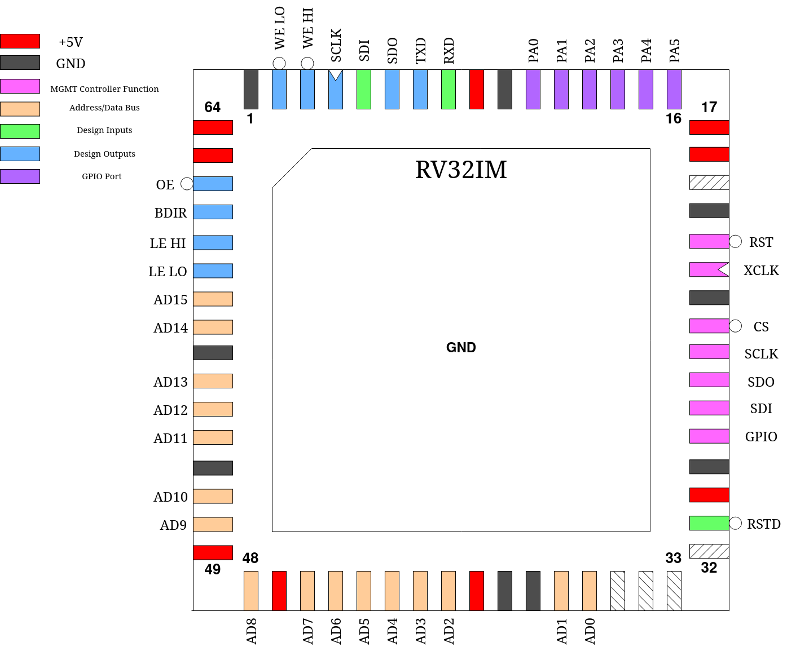

Tholin’s RISC-V
This project is a RV32IM CPU core intended to deliver high performance through high memory throughput despite the limited number of IO pins. Normally, CPU designs on caravel have to either use slow serial memories or put RAM on-die, both of which are suboptimal due to low memory speed and low memory capacity respectively.
An attempt is made here to solve this and provide a relatively high-speed memory interface at the cost of only just over half of the mprj_io pins and moderately increased board complexity.
Note, however, that this CPU was not made to be pipelined due to time constraints and thus does not offer the theoretically highest possible performance, but should still be superior in memory-bound applications.
Pinout
Pin # |
Name |
Type |
Summary |
|---|---|---|---|
|
RSTD |
I |
Active low design reset |
|
AD[15:0] |
IO |
16-bit bus multiplexing addresses and data |
|
LE LO |
O |
Latch enable for low (bits 0 - 15) address word |
|
LE HI |
O |
Latch enable for high (bits 16 - 30) address word |
|
BDIR |
O |
Indicates direction of bus pins, low = output, high = input |
|
OE |
O |
Active low memory Output Enable |
|
WE LO |
O |
Active low memory Write Enable for low byte (bits 0 - 7) |
|
WE HI |
O |
Active low memory Write Enable for high byte (bits 8 - 15) |
|
SCLK |
O |
SPI master port Serial Clock |
|
SDI |
I |
SPI master port Serial Data In |
|
SDO |
O |
SPI master port Serial Data Out |
|
TXD |
O |
UART Serial Data Out |
|
RXD |
I |
UART Serial Data In |
|
PA[5:0] |
IO |
Programmable GPIO port |
Memory Bus
The main feature of this design is the 16-bit wide Address/Data bus which transfers address and data information 16 bits at a time. Externally, the chip addresses memory as an array of 16-bit values. Each address emitted is a 16-bit word address with a length of 31 bits. As both halves of the address are multiplexed onto the same pins, transparent latches (ie 74HC573) need to be used to latch the full address. The pins LE_LO and LE_HI can be used as enables for these latches to first pass through, then latch the address halves.
This is then followed by the actual data read or write. A low level on OE indicates a read. However, because RISC-V has instructions for only storing single bytes, it is possible that only one half of a 16-bit word needs to be modified. The outputs WE LO and WE HI indicate which halves of the currently addressed word need to be updated:
|
|
Halves updated |
|---|---|---|
|
|
Neither (no write) |
|
|
Low half, bits 0 - 7 |
|
|
High half, bits 8 - 15 |
|
|
Both halves, bits 0 - 15 |
Most parallel RAM ICs with a 16-bit organization support this addressing scheme with two separate write enable signals, so no additional logic should be required to connect memory to this design.
Example timing diagram of the fetch and execute of a 32-bit store instruction, showing most possible bus states:
Note reg_mprj_settings == 2 in this example.
Peripherals
There are several on-die peripherals included with this design, all of which are accessed via memory mapped registers starting at address FFFFFF00h. These final 256 addresses of memory are used to address these registers, which are all 32-bit wide. Only 32-bit load/store instructions may be used to access them. Accessing any one of these memory locations will not trigger signals on OE, WE LO or WE HI, though the address may partially be latched by LE LO.
Serial ports
There are two serial ports accessible to the CPU:
The UART, exposed through pins RXD and TXD, a full-duplex asynchronous serial port that can send and receive 8-N-1 data frames at a custom baudrate. It is possible for the UART to trigger an interrupt upon receipt of a character on RXD.
A SPI master port, exposed through pins SDI, SDO and SCLK also with a custom bitclock.
SDIV - SPI Clock Divider
Address: FFFFFF00h
This register defines the amount by which the processor clock is divided to arrive at the SPI serial clock. The SPI serial clock will be equal to CPU clock / (SDIV * 2 + 1).
SDR - SPI Data Register
Address: FFFFFF04h
This register is used to transfer bytes in and out of the SPI port. Writing this register immediately begins a SPI full-duplex transfer. The SPI busy flag is set and the written data byte is serially transmitted at the same time as a data byte is received. No further writes to this location should be made while the busy flag is set.
Once the transfer is complete as indicated by the busy flag becoming clear, the received data byte can be obtained by reading from this location.
UDIV - UART Clock Divider
Address: FFFFFF08h
This register defines the amount by which the processor clock is divided to arrive at the UART bitclock. The UART bitclock will be equal to CPU clock / (UDIV + 1).
UDR - UART Data Register
Address: FFFFFF0Ch
This register address is used to provide the UART data to transmit as well as read received data. When written to, the UART will immediatly activate, set its busy flag and begin serially transmitting the provided data byte. No further writes to this location should be made while the busy flag is set.
When read, the UDR will contain the latest data byte received by the UART. Accessing this location with a read will also clear the UHB flag.
STAT - Serial Status Register
Address: FFFFFF10h
This read-only register contains status information for both the UART and SPI master ports. Besides their respective busy flags, the STAT also contains UHB, a flag which indicates that the UART has received a data byte which has not yet been read out of the UDR.
GPIO Port
The pins PA0 through PA5 form a 6-bit wide general-purpose IO port with individually programmable direction and data.
DDRA - Data Direction Register A
Address: FFFFFF14h
This register allows individually changing each port pin between an input and output port. A logic one equals an output port while a logic zero equals an input port. This register resets to a value of 0.
PORTA - Port Data Register A
Address: FFFFFF18h
This register allows individually setting the state of every port bit configured as an output port. This register resets to a value of 0.
PINA - Port Input A
Address: FFFFFF1Ch
This address returns the states of all port bits configured as inputs. It is read-only.
Timers
There are two 32-bit timers, Timer 0 and Timer 1, with customizable prescalers present, one of which is capable of generating interrupts. Their counts may be set and read by the CPU at any time.
Each timer counts up from 0 at the rate defined by TDIVx until its value reaches TTOPx, at which point it resets back to 0 and continues counting up from there. Timer 1 may optionally generate a interrupt each time it resets in this manner.
TDIV0 - Timer Clock Div 0 (prescaler)
Address: FFFFFF2Ch
This register defines the amount by which the processor clock is divided to arrive at the timer count rate for Timer 0. The rate will be equal to CPU clock / max(TDIV0, 1).
TDIV1 - Timer Clock Div 1 (prescaler)
Address: FFFFFF30h
This register defines the amount by which the processor clock is divided to arrive at the timer count rate for Timer 1. The rate will be equal to CPU clock / max(TDIV1, 1).
TTOP0 - Timer Top 0
Address: FFFFFF34h
The maximum value Timer 0 will count up to before reseting to 0.
TTOP1 - Timer Top 1
Address: FFFFFF38h
The maximum value Timer 1 will count up to before reseting to 0.
TMR0 - Timer 0
Address: FFFFFF3Ch
This register holds the actual value of Timer 0. Reading it will get the current timer count. Writing it will set it, with the timer continuing to count up from the new value unless said value is greater than or equal to TTOP0, in which case it will immediately reset to 0 the next time the prescaler expires and the timer is updated.
TMR1 - Timer 1
Address: FFFFFF40h
This register holds the actual value of Timer 1. Reading it will get the current timer count. Writing it will set it, with the timer continuing to count up from the new value unless said value is greater than or equal to TTOP1, in which case it will immediately reset to 0 the next time the prescaler expires and the timer is updated.
Interrupts
Tholin’s RISC-V supports a basic interrupt model where one of several interrupt sources can generate an Interrupt Request (IRQ) which will cause the CPU to branch to a new location defined by IVEC upon completion of the current instruction, which is intended to hold an interrupt handler. Unlike a regular JAL instruction, however, the old Program Counter value is moved into one of the memory-mapped registers instead of a general-purpose register, for use in an eventual return from the interrupt handler. The custom iret instruction needs to be used for this purpose. No other action is taken, and the general-purpose registers must be backed up to memory in software, as needed.
Before any interrupts can be generated, bits in IEN need to be set to enable individual interrupts and the custom sei instruction executed to enable interrupts globally. cli can be used to disable interrupts globally again, independent of the settings in IEN. After reset, IEN and the global interrupt enable are both clear. This global interrupt enable exists to prevent further interrupts from triggering while another is already being handled, as interrupts cannot stack. It is cleared at the beginning of an interrupt.
As there are several IRQ sources, numbered IRQ0 through IRQ2, but only one interrupt can be handled at one time, each IRQ is actually a latch which is set when an interrupt is triggered. Upon completion of a interrupt handler, further interrupts will be triggered immediately until all IRQ latches are clear.
The clearing of IRQ latches is not automatic and needs to be done in software by writing to a specific memory-mapped register. If this is not done, the interrupt logic will mistakenly believe the interrupt has not yet been served and re-trigger it indefinitely. IRQs can also be cleared outside the interrupt handler code to effectively “cancel” that interrupt. Clearing an interrupt enable in IEN also immediately clears that IRQ.
Of further note is that the CPU does not distinguish between multiple interrupt handlers and will always branch to IVEC. Instead, it is possible for the CPU to read the INUM register to know which is the current IRQ being handled and jump to an appropriate subroutine.
The following interrupt sources exist:
External Interrupt
IRQ #: IRQ0
When the external interrupt is enabled in IEN, a low-to-high transition on pin PA5 triggers this interrupt. PA5 must be set to an input using DDRA beforehand. The state of the PA5 input can still be read through PINA.
The interrupt must be cleared by writing a zero to address FFFFFF1Ch.
Timer 1 Interrupt
IRQ #: IRQ1
When enabled in IEN, Timer 1 will generate this interrupt every time it reaches TTOP1 and resets to 0.
The interrupt must be cleared by writing a zero to address FFFFFF44h.
UART Interrupt
IRQ #: IRQ2
When enabled in IEN, the UART will generate this interrupt whenever a complete character has been received and is now available to be read out of the UDR.
The interrupt must be cleared by reading UDR.
Registers
There are several memory-mapped registers involved in controlling the interrupt logic. These are:
IVEC - Interrupt Vector Address
Address: FFFFFF20h
This register holds the address of the first instruction of the interrupt handler. As RISC-V requires all instructions be alligned to 32-bit words, the least-significant two bits of this register are always 0.
INUM - Current Interrupt Number
Address: FFFFFF24h
This read-only register holds the number of the current IRQ being handled plus one. This can be used by interrupt handler code to learn which exact interrupt it is handling, and jump to a appropriate subroutine. If the CPU is not currently handling an interrupt, this register reads zero.
IEN - Interrupt Enables
Address: FFFFFF28h
This register contains three bits that individually enable one of the three interrupts. It is cleared to zero on reset.
PREVPC - Previous Program Counter Backup
Address: FFFFFF48h
This register is used as a location to back up the previous Program Counter value to, at the beginning of an interrupt. It is read-only.
The iret instruction
Opcode: 26D00073h
This is the instruction used to return from interrupts. It restores the Program Counter value from the backup made at the beginning of the interrupt and then inverts the global interrupt enable. As the global interrupt enable is cleared at the beginning of an interrupt, this has the effect of enabling it again, allowing further interrupts to take place.
The sei instruction
Opcode: 00700073h
This instruction sets the global interrupt enable.
The cli instruction
Opcode: 00800073h
This instruction clears the global interrupt enable.
Custom Settings
This design makes use of the reg_mprj_settings wishbone register. Specifically, it can be used to change the behavior of the WE HI and WE LO pins to change the width and timing of them, which may be required depending on the exact memory IC used with the design. There are three possible settings (the default is zero):
0: WE LO/WE HI is active for a full clock cycle.
1: WE LO/WE HI is only active when the clock is low.
2: WE LO/WE HI is only active when the clock is high.